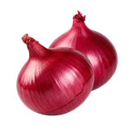

होम / प्याज

प्याज का भाव आज | Onion Mandi Price Today
प्याज के आज के उपलब्ध मंडी भाव देखें—कोटा, केकरी, इंदौर और गोंडल के मॉडल, न्यूनतम और अधिकतम रेट और प्रति किलो भाव।
नीचे मंडी-वार सूची में प्याज के उपलब्ध भाव दिए हैं। मंडी के नाम पर क्लिक करके उस मंडी की दूसरी फसलों के भाव भी देख सकते हैं।
प्याज का भाव आज: मंडी रेट, 1 किलो का भाव और भाव घटने-बढ़ने के कारण
राम-राम किसान भाइयों! प्याज ऐसी फसल है जो रसोई से लेकर मंडी तक हर जगह चर्चा में रहती है। कभी इसके भाव आसमान छूते हैं तो कभी किसान को लागत निकालना भी भारी पड़ जाता है। इसीलिए हर किसान और व्यापारी की नज़र रोज़ इसी पर रहती है कि आज मंडी में प्याज का भाव क्या चल रहा है, और आने वाले दिनों में भाव किस तरफ़ जा सकता है।
FasalBhav.in पर हम प्याज का मंडी भाव रोज़ अपडेट करते हैं, ताकि आप सही जानकारी के साथ बेचने या रोकने का फ़ैसला कर सकें।
प्याज का भाव रोज़ इतना क्यों बदलता है?
प्याज उन फसलों में है जिनका भाव सबसे जल्दी ऊपर-नीचे होता है। इसकी वजह यह है कि इसकी आवक, माँग और मौसम, तीनों का असर तुरंत बाज़ार पर दिखता है। मुख्य कारण ये हैं:
- मंडी में आवक: जिस दिन मंडी में माल ज़्यादा आता है, उस दिन भाव दब जाता है। आवक घटते ही भाव को सहारा मिल जाता है। प्याज में यह असर इतना तेज़ होता है कि एक-दो दिन में ही भाव पलट सकता है।
- महाराष्ट्र की आवक का असर: देश में प्याज का बड़ा हिस्सा महाराष्ट्र, खासकर नासिक और लासलगाँव इलाके से आता है। वहाँ की आवक और भाव का असर राजस्थान, मध्य प्रदेश, गुजरात और दिल्ली की मंडियों तक पहुँचता है।
- बारिश और मौसम: ज़्यादा बारिश या बेमौसम बारिश से मंडी तक माल पहुँचने में देरी होती है और खेत से निकला प्याज खराब भी होता है। इससे बाज़ार में माल कम पड़ता है और भाव चढ़ सकता है।
- भंडारित माल की स्थिति: पुराने प्याज का स्टॉक कितना बचा है, इस पर नए प्याज के आने तक का भाव काफ़ी निर्भर करता है। स्टॉक कम हो तो भाव को सहारा मिलता है, स्टॉक ज़्यादा हो तो दबाव रहता है।
- निर्यात और सरकारी नीतियाँ: निर्यात पर शुल्क, रोक या छूट जैसे फ़ैसले प्याज के भाव पर सीधा असर डालते हैं। निर्यात खुलने पर माँग बढ़ती है और रोक लगने पर घरेलू बाज़ार में माल बढ़ने से भाव गिर सकता है।
- त्योहार और शादी का सीज़न: इस समय होटल, ढाबे और घरों में खपत बढ़ती है, जिससे माँग में तेज़ी आती है।
- ढुलाई और मौसम की रुकावट: रास्ते बंद होने, ट्रकों की कमी या ढुलाई महँगी होने से भी अलग-अलग मंडियों के भाव में फ़र्क आ जाता है।
1 किलो प्याज का भाव कैसे निकालें?
मंडी में प्याज का भाव आमतौर पर प्रति क्विंटल (100 किलो) बताया जाता है, जबकि आम आदमी 1 किलो का भाव जानना चाहता है। हिसाब सीधा है: क्विंटल का भाव लेकर उसे 100 से भाग दे दें, तो 1 किलो का थोक भाव निकल आता है।
ध्यान रखें कि यह मंडी का थोक भाव होता है। सब्ज़ी की दुकान या ठेले पर मिलने वाला खुदरा भाव इससे अलग होता है, क्योंकि उसमें ढुलाई, मंडी शुल्क, हम्माली, छँटाई में होने वाला नुकसान और दुकानदार का मुनाफ़ा जुड़ जाता है। इसलिए किसान को मिलने वाला भाव और ग्राहक के भुगतान का भाव कभी बराबर नहीं होते।
प्याज की किस्म और क्वालिटी से भाव में फ़र्क
मंडी में सभी प्याज एक भाव पर नहीं बिकते। एक ही मंडी में एक ही दिन अलग-अलग क्वालिटी का माल अलग-अलग दाम पर बिकता है।
- सुपर या वीआईपी क्वालिटी: एक समान बड़ा आकार, चमकदार छिलका, ठोस और साफ़ माल। सबसे ऊँचा भाव इसी को मिलता है।
- अच्छी क्वालिटी: आकार ठीक-ठाक, दाग-धब्बे कम, छँटाई अच्छी।
- एवरेज या सामान्य माल: आकार मिला-जुला, थोड़ा छोटा-बड़ा।
- गोल्टा या गोल्टी: छोटे आकार का प्याज। इसका भाव सबसे कम रहता है।
- लाल और सफ़ेद प्याज: दोनों की माँग और खपत का इलाका अलग है, इसलिए भाव में भी अंतर रहता है। लाल प्याज की खपत सबसे ज़्यादा है।
- नासिक और लोकल प्याज: नासिक इलाके का प्याज अपनी क्वालिटी के लिए जाना जाता है। स्थानीय मंडियों में अपने इलाके का प्याज भी बड़ी मात्रा में बिकता है और दोनों के भाव में फ़र्क दिख सकता है।
- नया और पुराना प्याज: पुराने भंडारित प्याज में नमी कम होती है और वह टिकाऊ होता है, जबकि नए प्याज में नमी ज़्यादा होती है। दोनों के भाव में अक्सर अंतर रहता है।
प्रो टिप: प्याज को छाँटकर, सूखा और साफ़ करके मंडी ले जाएँ। एक समान आकार का साफ़ माल अलग से बिके तो उसका भाव ऊपर की श्रेणी में मिलता है, जबकि मिला-जुला माल औसत भाव में चला जाता है। थोड़ी सी छँटाई की मेहनत का फ़र्क सीधा भाव में दिखता है।
राजस्थान की मंडियों में प्याज का भाव
राजस्थान में प्याज का कारोबार जयपुर, जोधपुर, अलवर, झालावाड़, कोटा, बीकानेर जैसी कई मंडियों में होता है। इन सब मंडियों का भाव एक जैसा नहीं रहता, क्योंकि हर मंडी की आवक, स्थानीय पैदावार, आसपास के राज्यों से आने वाले माल और खपत अलग होती है।
- जयपुर मंडी: राज्य की सबसे बड़ी मंडी होने के कारण यहाँ आवक भी ज़्यादा होती है और यहाँ का भाव पूरे प्रदेश के लिए एक संकेत का काम करता है।
- जोधपुर मंडी: पश्चिमी राजस्थान की बड़ी मंडी है। यहाँ का भाव अक्सर बाहर से आने वाले माल और स्थानीय माँग पर निर्भर रहता है।
- अलवर मंडी: दिल्ली-एनसीआर के करीब होने से यहाँ के भाव पर दिल्ली की माँग का असर दिखता है।
- झालावाड़ मंडी: मध्य प्रदेश से सटा इलाका है, इसलिए वहाँ की मंडियों की हलचल का असर यहाँ भी पड़ता है।
अपनी नज़दीकी मंडी के साथ आसपास की एक-दो मंडियों का भाव भी ज़रूर देखें। कभी-कभी थोड़ी दूर की मंडी में बेहतर भाव मिल जाता है। पर वहाँ माल ले जाने से पहले ढुलाई और दूसरे खर्च जोड़कर देख लें कि असली बचत कितनी होगी।
दूसरे राज्यों की प्रमुख प्याज मंडियाँ
- महाराष्ट्र: लासलगाँव, पिंपलगाँव और नासिक इलाके की मंडियाँ देश में प्याज के भाव की दिशा तय करने वाली मानी जाती हैं।
- मध्य प्रदेश: इंदौर, उज्जैन और मंदसौर की मंडियों में प्याज की अच्छी आवक रहती है। इंदौर की मंडी में महाराष्ट्र और स्थानीय, दोनों का माल आता है।
- गुजरात: महुवा और गोंडल की मंडियाँ प्याज के लिए जानी जाती हैं।
- दिल्ली: आज़ादपुर मंडी उत्तर भारत की सबसे बड़ी मंडियों में है और यहाँ के भाव की चर्चा पूरे देश में होती है।
- उत्तर प्रदेश: प्रयागराज, कानपुर और लखनऊ जैसी मंडियों में भी प्याज का बड़ा कारोबार होता है।
प्याज का भाव कब बढ़ता है और कब गिरता है?
हर साल प्याज के भाव का एक आम चक्र देखा जाता है, हालाँकि यह हर साल एक जैसा नहीं रहता।
- नई फसल की आवक का समय: जब मंडियों में नया प्याज बड़ी मात्रा में आता है, तब भाव पर दबाव रहता है। रबी का प्याज आमतौर पर मार्च से मई के बीच बड़ी मात्रा में आता है, इसीलिए इस दौरान भाव अक्सर नरम रहता है।
- भंडारित माल पर निर्भरता का समय: नई आवक घटने के बाद बाज़ार काफ़ी हद तक भंडारित प्याज पर चलता है। अगर स्टॉक कम बचा हो, तो इस दौरान भाव में तेज़ी आ सकती है।
- खरीफ की नई आवक से पहले: जब पुराना माल खत्म होने लगता है और नया माल आने में देर होती है, तब कई बार भाव चढ़ते देखे गए हैं।
- त्योहारी माँग: त्योहार और शादियों के मौसम में खपत बढ़ने से बाज़ार में मज़बूती आती है।
यह केवल आम रुझान है। हर साल की पैदावार, बारिश, निर्यात नीति और स्टॉक के हिसाब से तस्वीर बदल सकती है।
प्याज का भाव कब बढ़ेगा, और आगे कैसा रहेगा?
यह सवाल हर किसान पूछता है, लेकिन सच्चाई यह है कि प्याज का भविष्य का भाव कोई पक्के तौर पर नहीं बता सकता। जो भी ‘पक्का बढ़ेगा’ या ‘पक्का गिरेगा’ जैसे दावे करे, उन पर आँख मूँदकर भरोसा न करें।
हाँ, कुछ बातें देखकर आप अपना अंदाज़ा ज़रूर लगा सकते हैं:
- मंडियों में आवक बढ़ रही है या घट रही है
- पिछले कुछ दिनों में भाव किस तरफ़ जा रहा है
- मौसम और बारिश की स्थिति कैसी है
- निर्यात और सरकारी नीति में कोई बदलाव तो नहीं आया
- भंडारण में कितना माल बचा है, इसकी चर्चा मंडी में क्या है
रोज़ भाव देखने की आदत बना लें। दो-चार दिन लगातार भाव देखने से आपको दिशा का अंदाज़ा मिलने लगेगा और आप जल्दबाज़ी में फ़ैसला लेने से बच पाएँगे।
प्याज बेचने से पहले इन बातों का ध्यान रखें
- सिर्फ़ एक दिन के भाव पर फ़ैसला न लें। कुछ दिनों का रुझान ज़रूर देखें।
- अपनी मंडी के साथ आसपास की 2-3 मंडियों का भाव मिलाकर देखें।
- ढुलाई, हम्माली, तुलाई और मंडी शुल्क घटाकर असली बचत निकालें।
- प्याज को छाँटकर और साफ़ करके ले जाएँ, क्योंकि छँटे हुए माल का भाव बेहतर मिलता है।
- बहुत ज़्यादा आवक वाले दिन माल ले जाने से बचें, अगर आपके पास रुकने की गुंजाइश हो।
- आढ़ती या व्यापारी से भुगतान की शर्तें पहले तय कर लें, और उधार पर सौदा करते समय खास सावधानी रखें।
- तौल की पर्ची और भुगतान की रसीद हमेशा संभालकर रखें।
प्याज का भंडारण और भाव का संबंध
प्याज उन फसलों में है जिनका भंडारण भाव का बड़ा खेल तय करता है। जिन किसानों के पास सही भंडारण की सुविधा होती है, वे भाव कमज़ोर होने पर माल रोक सकते हैं और भाव सुधरने पर बेच सकते हैं। लेकिन इसमें जोखिम भी है: भंडारण के दौरान प्याज में सड़न, अंकुरण और वज़न में कमी होती है, और भाव न सुधरे तो नुकसान बढ़ जाता है।
- भंडारण के लिए सूखा, अच्छी तरह पका और साफ़ माल ही रखें।
- हवादार जगह पर भंडारण करें, जहाँ नमी न हो।
- बीच-बीच में माल की जाँच करते रहें और सड़ने वाले प्याज को अलग कर दें।
- भंडारण में होने वाले नुकसान और खर्च को भी हिसाब में रखें, तभी सही अंदाज़ा लगेगा कि रोकने का फ़ायदा है या नहीं।
निष्कर्ष
प्याज का सौदा सिर्फ़ आज का भाव देखकर नहीं होता। आवक, क्वालिटी, आसपास की मंडियों का रेट, भंडारण की सुविधा और अपनी आर्थिक ज़रूरत, इन सबको मिलाकर फ़ैसला लेने से ही अच्छा दाम मिलता है। रोज़ प्याज और दूसरी फसलों का ताज़ा मंडी भाव जानने के लिए FasalBhav.in पर आते रहें।
खेती की उपयोगी जानकारी और मंडी भाव सीधे अपने फोन पर पाने के लिए हमारा मुफ्त WhatsApp ग्रुप ज़रूर जॉइन करें।
सूचना: इस पेज पर दिए गए भाव केवल जानकारी के लिए हैं। खरीद-बिक्री का फ़ैसला करने से पहले अपनी मंडी में भाव की पुष्टि ज़रूर करें।